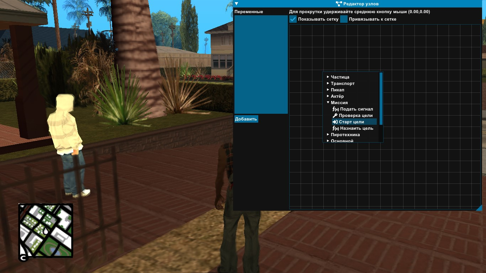
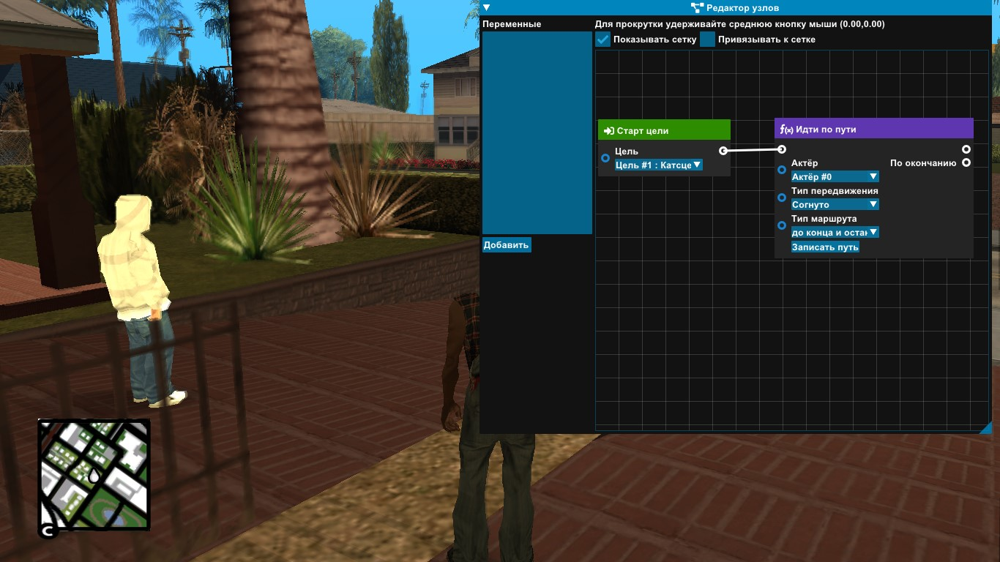
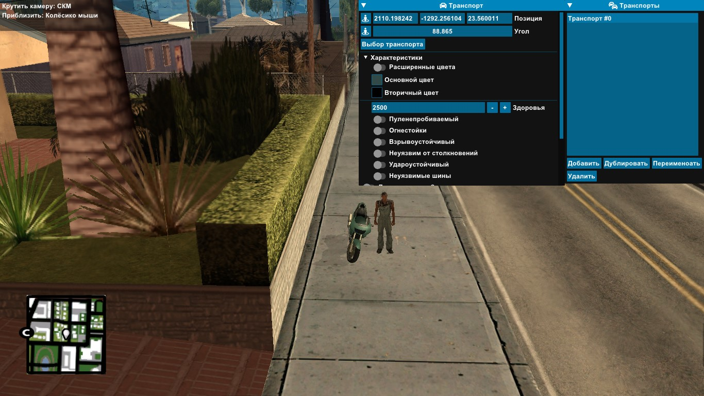
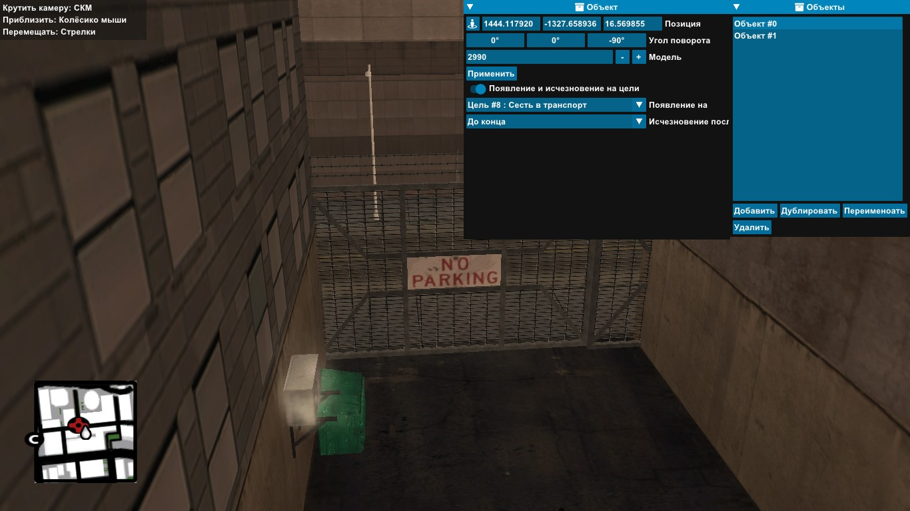
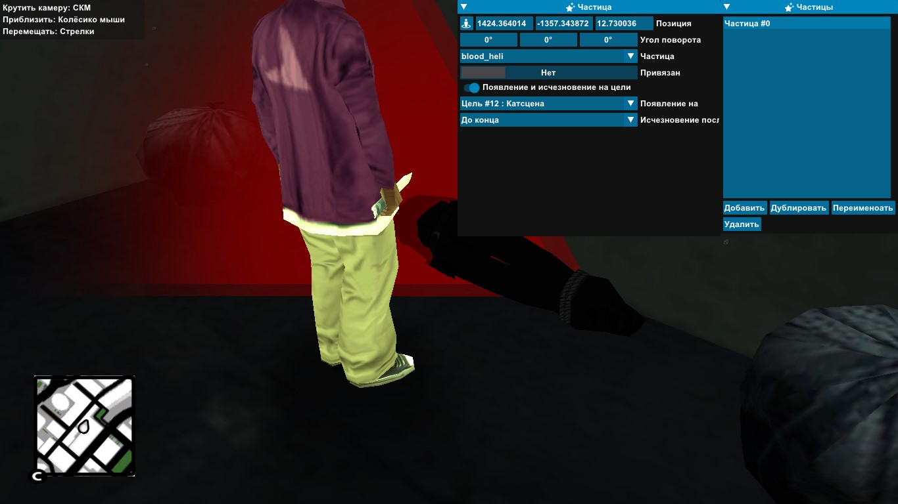
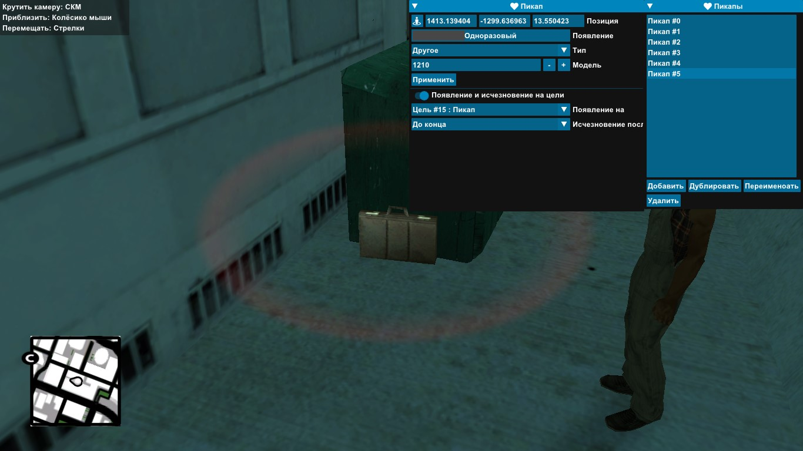
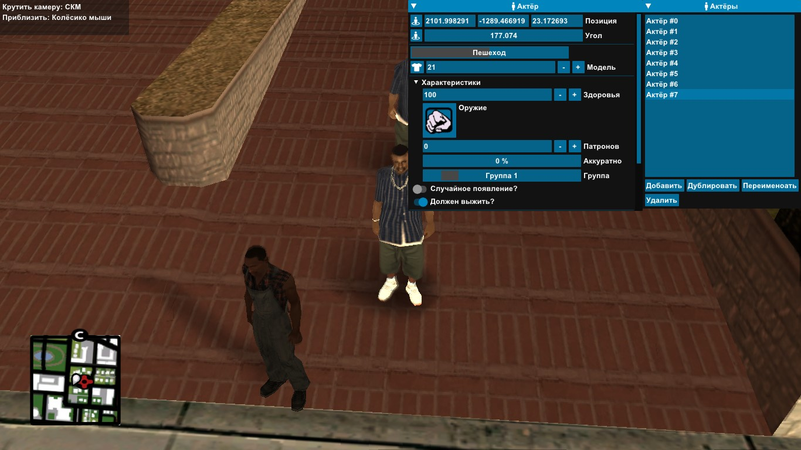
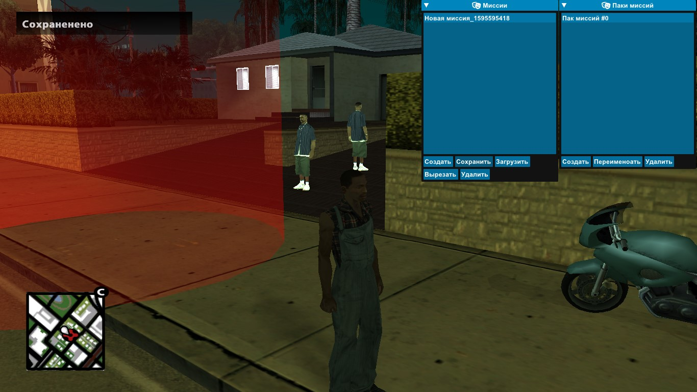

Simple mission
Note
I took Andrej's video lesson as a basis. - https://youtu.be/L8PUNcX8Rck
Mission building
In this text lesson we will try to make the mission as in video above. First we need to create the mission package and the mission itself. To do it, turn on Main menu (pressing U) and go to Mission packs. Press Create a new package will appear, then press Create again but already in Missions window. You can rename it if you like.
How to rename?
- To change the package, highlight the package in the window Mission packs and click Rename. Enter your package name in the input field and click Close.
- To rename a mission, exit the window Mission packs (press U), go to Mission settings. In the Mission name field, type in your mission name. Then go back to Mission packs and in the window Missions select the mission and press Save.


Mission setting
Pick a place where the mission will begin. Put a mark on the map, and we can use the function LDYOM, teleport to the mark. To do this, go to Main menu - Tools and select Teleport to marker.

Let's move on to mission settings. Main menu - Mission settings. Let's change the time of day at the beginning of the mission, press Time in the mission. I'll set the time to 7:00, also Maximum wanted set it to 0 so the police don't touch us.

Let's put the player's spawn. To do this, press Player in the same window. 1. Click on the icon Player coordinates (the current coordinates are set) 2. Click on the clothing icon, and select a skin.

Most of the creation
Let's start, as in DYOM, by creating an actor.
Info
Anyway, where to start is not so important as LDYOM is non-linear. The only important thing is the order of the targets, they work linearly, but they can also be regrouped if necessary.
Main menu - Actors - Add. We're alienating the actor a little further, because we'll add the action to walk, a little later. I picked 21 models. The rest can be left as is.

To make the conditions more clear, we will first create a goal, and then create it, but in general it makes no difference. Main menu - Targets - Add, select Environment and Cutscene - Create. Move slider Follow to position Actor and select in the list of newly created actor. Time will be set to 3 seconds.

Press Edit manually and set the camera to the starting position approximately on the actor.

Now we have to get acquainted with such thing as Node Editor.
Info
Node editor added from Beta 0.7.0
We'll use it to make the actor walk. Let's start, let's open it, Main menu - Node Editor, we won't go into interface details, I can release a separate tutorial on this later. Click on the middle part of the RMB editor and the list of nodes will appear, they are divided into groups. We are interested in the group Mission, in it we choose the node Start target.

A node appears, in the drop-down list Target select a target with cutscene. Next, press RMB again, and this time we enter the group Actor and select the node Follow the path.

Now we need to connect the nodes together to form a chain. In the nodes next to the values, you can see circles (connectors), which are the points at which the nodes connect to each other. On the left are responsible for the incoming and on the right are responsible for the outgoing. Quick tour through the colors.
| Color | Value |
|---|---|
 |
Stores nothing in yourself, is the wire between the nodes. |
 |
Stores a numeric value, sends its value forward . |
 |
Stores a logical value, sends its value forward. |
| 🟢 | Stores a string, sends it forward. |
For now, it's enough that the white connector is the conductor we need. Point your mouse at any white connector (it doesn't matter if it's an input or output connector) and, while holding down your mouse, drag it to another connector and let go. A circuit must be formed between the nodes. It is now connected.
Info
If you want to disconnect the nodes, press RMB on the incoming connector, and the circuit will be broken.

Note the second node. Choose our actor to go from the drop-down list Actor. Then choose Movement type - Walking, Route type leave it as default.

Now press Record path, set the actor's path, exit.

While we are closing the editor and creating the target for cutscene again, but this time as unusual, go to Targets select the previous cutscene and press Duplicate. The letter "c" will be added automatically. You do not need to touch, or you can rename it.

Duplicated to conveniently copy the camera position. Put Follow on No. This time we're going to make a smooth camera, for that we're going to turn on Move camera. Set the time for 5 seconds, and fill in the field Text.
~b~Terry~w~: Hey, there's a hidden case downtown with $30000 inside.

Point the camera at the player.

Let's create another flyover cutscene, create a "pacifier" for that. Main menu - Targets - Add - Environment and Cutscene - Create. We set the time to 0 and put the camera at the starting position.

We'll duplicate the target again. Let's turn on Move camera, set it to 5 seconds, and fill in the Text field.
~b~Terry~w~: Bring it to me, and we'll split it in half. Okay?

Put the camera in position.

Now let's do a player animation. Main menu - Targets - Add - Player and Player animation - Create. Now you need to find the desired one in the pile of animations, to do it, select Pack and Animation, press Preview. To make your search easier, select Pack - COP_AMBIENT and Animation - Coplook_thing. The rest is left as default.

We're creating a cutscene. Main menu - Targets - Add - Environment and Cutscene - Create. Set 3 seconds, and write Text - Dave: Of course I'll do it!

Put the camera in position.

We're creating a target to collect the pickup. Main menu - Targets - Add - Pickup - Create. You need a pickup for this purpose, but we've already created a target, here's an example of non-linearity.
Warning
But you cannot launch a mission when something is not specified, because it will cause a script error.
Let's make the same pickup truck. Main menu - Pickups - Add. Appears the pickup, put it in position, select Weapons - Tec-9, Appears on select our target with the pickup. **We're going to put 150 ammo. We'll leave the rest to default.

We return to the target, and we see that the first pickup has automatically got out. Marker color set Green, time set 5 seconds, in the field Text - Pick your ~g~weapon~w~.

Also by analogy, we'll add another pickup with a knife.

And a pickup with armor. You need to change the Type to Armor.

Let's make the actor go away. Let's go back to Node editor, and create the node Start target and point Target at the target with the pickup.

In the same way, we create a node Follow the path, connect, specify a path.

We get out of the editor, and we go into the actor. Pointing Disappearance after to the last target.

Let's make a bike. Main menu - Vehicles - Add. Vehicle selection select PCJ-600 (id461). Go to Characteristics and change the color to suit your taste. We put Health 2500. We edit manually.

Let's create a vehicle target. Main menu - Targets - Add - Get in the vehicle - Create. In Vehicle we choose our bike. Marker color put Blue, in the field Text - Sit on ~b~ motorcycle~w~.

Teleport to the mission location.

We'll close the aisle. To do this, let's create the object(s). Main menu - Objects - Add. You can point objects at guesses, but there are more than 1000 of them, so I will use the site below.
In field Model write 2990 and Apply. The fence appears. Appearance on put it on the last target. Set it to block the path, if it's not enough, create another object.

We'll create two hiding places with pickups. For this purpose, we create a box object. Main menu - Objects - Add. Model - 1224, Appearance on is the last target. Exactly the same way we do the second one.

Now the pickups. First Type - Health, second Type - Weapons, Desert Eagle weapons, Ammo - 5. Appearance on put both on last target. Let's make sure they can't be seen from behind the boxes.

Let's make a car. Main menu - Vehicles - Add. Car - Sabre (475), let's lock the car, put Appearance on - last target.

Let's make enemies, we need to set up group relationships for that. Let's go to Main menu - Group relationship. Choose any group but 1, by default all actors from 1 group, it is better to take 2 or more. Open it, change the slider in front of Player to Hate.

Now let's make an enemy. Command menu - Actors - Add. Model - 103, go to Characteristics, Weapon - Desert Eagle, Ammo - 9999, Health - 250, Accuracy - 75, Headshot - turn it off, Appearance on - last target, Group - the group you made the enemy.

To add an animation to the enemy, go to Node editor. Create the node Start target select the last target, and create the node Actor - Play the actor's animation connect them. Choose our enemy in Actor, in Animation - IDLE_chat, turn on Looped.

Let's create another actor. Model - 102, Weapon - Uzi, Ammo - 9999, Acuracy - 50, Headshot - switch it off, Health - 250, Group - enemies, Appearance on - last target.

We're making more enemies.

Let's add a scene with a dead body. Let's add a scene with a object cop. Model - 3092. Appearance on - last target.

We'll add an enemy next to it. Model - 104. Health - 500. Weapon - Knife. Headshot - switch it off. Group - enemies. Appearance on - last target.

Let's add an animation to the actor, go to Node editor. Create the node Actor - Play the actor's animation connect it to the node from the existing target or lead to the previous node of the animation. Choose our enemy in Actor, in Pack - BOMBER, Animation - BOM_PLANT_LOOP, turn on Looped.
Info
It is recommended not to create a heap of similar nodes, it is better to chain them together, except if the nodes are too far apart.

Let's create another enemy at the entrance. Model - 104, Weapon - Desert Eagle, Accuracy - 100, Health - 250, Headshot - switch off, Appearance on - last target.

Also add animation to the actor, go to Node editor. Create the node Actor - Play the actor's animation connect it to the node with the existing target or lead to the previous node of the animation. Choose in Actor our enemy, in Pack - MISC Animation - PLYRLEAN_LOOP, turn on Looped.

We're creating a target checkpoint. Main menu - Targets - Add - Checkpoint - Create. Increase the radius, Marker color - Yellow, Text - *Drive to ~y~downtown~w~.

Let's create a flyover cutscene. Main menu - Targets - Add - Environment and Cutscene - Create. We'll make a smooth camera, for that we turn on Camera motion. We set the time to 3 seconds. We'll put it in position.

We're creating another flyover cutscene.

Now it's cutscene with a dead body. It's time for two seconds.

Duplicate the last cutscene. We're changing the time by three seconds.

Let's create particles for the corpse. Main menu - Particles - Add. Particle - blood_heli, Appearance on - last target.

We're creating a target to kill the actor. Main menu - Targets - Add - Hit/kill actor - Create. To Actor select the enemy from the corpse, mark Kill everyone in the group?, Target text - Kill everyone ~r~ Enemies~w~.

We create a target for the pickup. Main menu - Targets - Add - Pickup - Create. Now let's create a pickup for the target. Main menu - Pickups - Add. Type - Other, Model - 1210, Appearance on - target pickup.

Return to target. In Pickup select the newly created pickup, in Text - Pickup ~g~case~w~.

We add money to the player. Main menu - Targets - Add - Player - Add money. Add - 30000

Let's go back.
Let's create an actor. Main menu - Actors - Add. Model - 21. Let's put Must we survive?, Appearance on is the last target.

We're making a checkpoint. Text - Come back ~y~home~w~ and meet ~b~Terry~w~., Time put 5 seconds.

We're creating a cutscene. Time 5 seconds, Text - b~Terry~w~: Way to go, man, here's your cut!

Now set Terry's animation, go to Node editor. Create the node Start target select the last cutscene, and create the node Actor - Play the actor's animation connect them. Choose in Actor our Terry, in Animation - IDLE_chat, turn on Looped.

We take half the money. Main menu - Targets - Add - Player - Add money. Add and enter -15000.

We're creating a timeout. Main menu - Targets - Add - Environment - Timeout - Create. We leave it as default.

End
The whole mission is ready, we keep the mission and we can check it out.

You should have a mission in the end. If you have any difficulties or misunderstandings you can download my save (Beta 0.7.0). Installation: Put the folder from the archive into the directory "... \moonloader\Missions_pack"